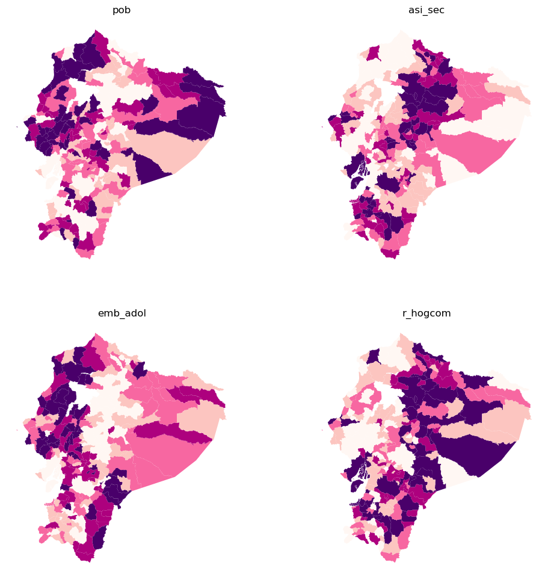
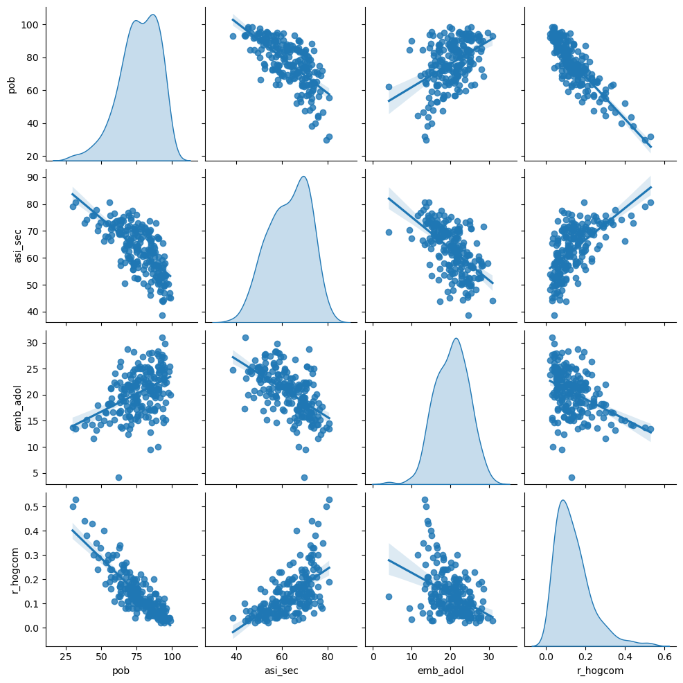
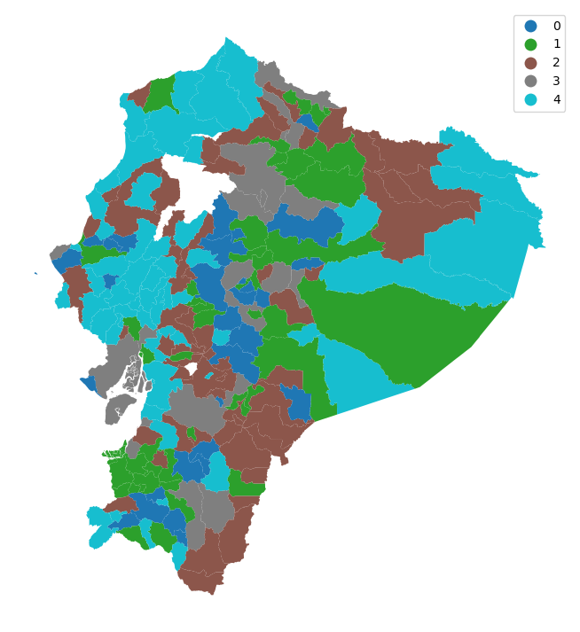
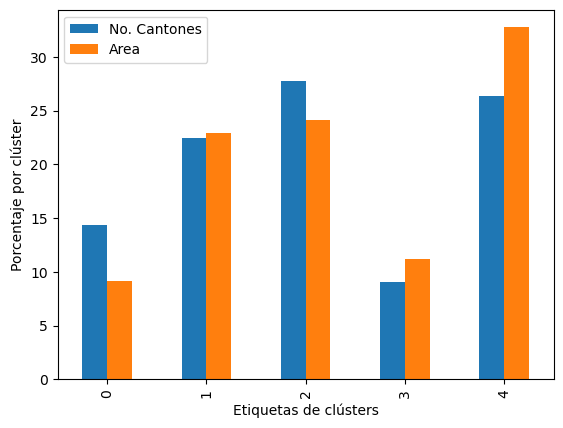
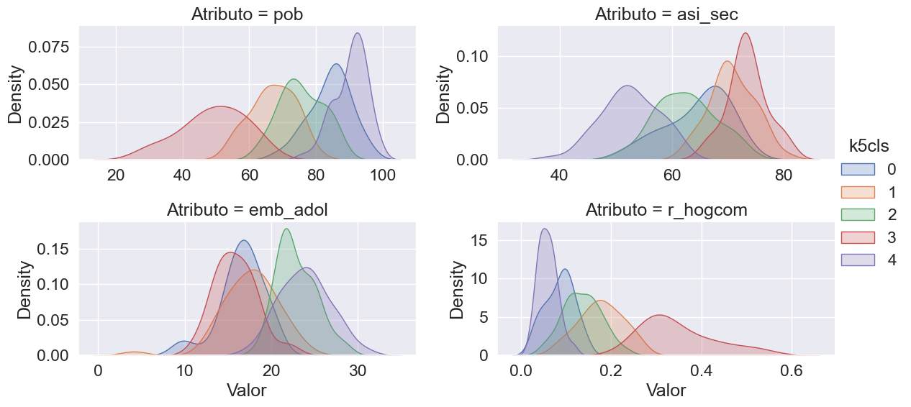
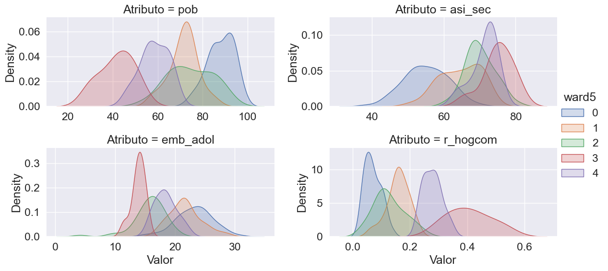
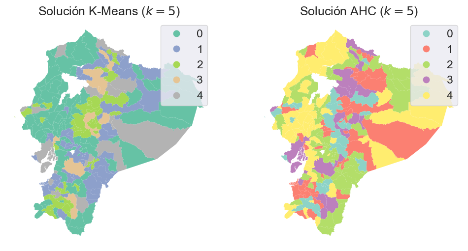
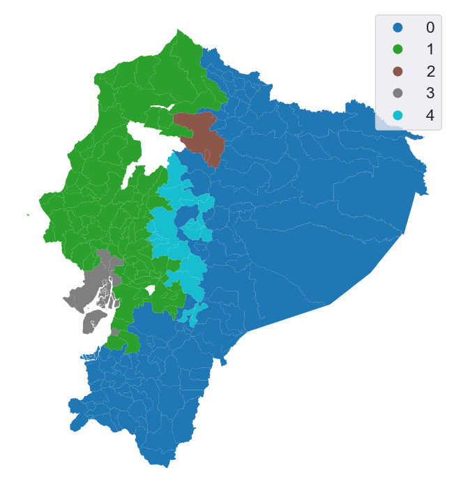
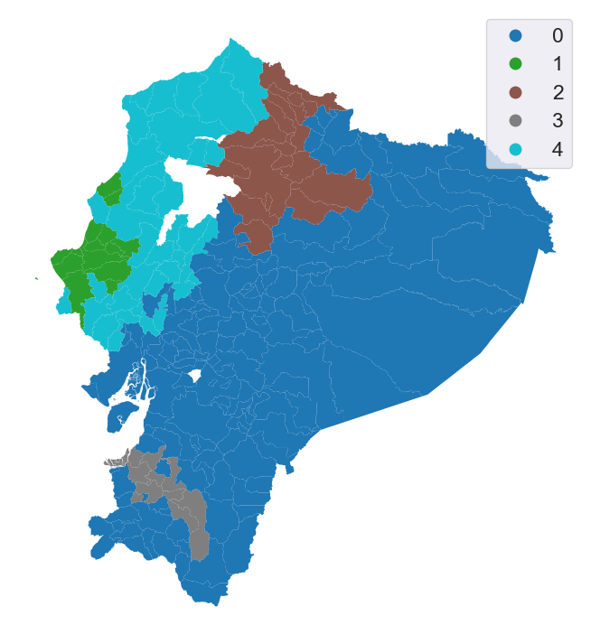

13. Clustering y regionalización#
Muchos fenómenos del mundo real son complejos y están determinados por múltiples factores que actúan al mismo tiempo. En estadística, estos se conocen como procesos multivariados, a diferencia de los univariados, donde solo interviene una variable.
El análisis de clústeres es una herramienta clave en el análisis geográfico que permite identificar patrones de similitud entre varias dimensiones y resumir esa complejidad en representaciones más simples. Esto facilita la comprensión de procesos complejos, incluso por parte de audiencias no técnicas.
13.1. Introducción#
El análisis de clústeres es una técnica de aprendizaje estadístico no supervisado que agrupa observaciones sin categorías predefinidas. Su objetivo es formar conglomerados de elementos similares entre sí, diferenciándolos de otros grupos. Cada clúster se puede describir mediante un perfil que resume sus características comunes dentro de un fenómeno multivariado.
Como los elementos de un clúster son similares entre sí, su perfil permite resumir eficazmente un fenómeno multivariado complejo. En lugar de analizar todas las variables por separado, basta con observar el perfil del grupo. Este enfoque es ampliamente usado en ciencia de datos geográfica para entender la estructura espacial de datos complejos y multivariados.
En el análisis espacial, una región funciona de forma similar a un clúster, ya que agrupa elementos con perfiles similares. La diferencia clave es que una región también incorpora información sobre la ubicación de sus elementos. Es decir, además de compartir características, los miembros de una región están vinculados espacialmente, lo que la hace útil para representar tanto contenido como contexto geográfico.
La regionalización es un tipo de agrupamiento que considera tanto la similitud estadística como la ubicación espacial de las observaciones. A diferencia del clustering convencional, impone restricciones geográficas, como la conectividad entre los elementos de una misma región. Estas condiciones pueden ajustarse según el contexto analítico.
En este capítulo se abordan técnicas de clustering y regionalización, aplicadas al análisis de datos socioeconómicos. Trabajaremos con información del Censo de Población y Vivienda de 2010 del Ecuador, disponible en el siguiente enlace:
Este conjunto de datos contiene indicadores cantonales como:
id: Identificador de la división político-administrativa del cantóncan: Nombre del cantónpob: Porcentaje de personas con Necesidades Básicas Insatisfechas (NBI)asi_sec: Tasa neta de asistencia a educación secundariaemb_adol: Porcentaje de embarazo adolescentetot_hog: Total de hogareshog_comp: Hogares con disponibilidad de computadorr_hogcom: Proporción de hogares con computador respecto al total de hogares
El análisis comienza con una exploración de la naturaleza multivariada del conjunto de datos, considerando la distribución estadística y espacial de cada variable y sus relaciones bivariadas. Este paso preliminar sirve para orientar el uso posterior de técnicas de agrupamiento.
A continuación, se emplean enfoques geodemográficos, aplicando algoritmos como k-medias y Ward jerárquico a los datos demográficos espaciales. La representación geográfica de los clústeres resultantes permite descubrir patrones relevantes en la estructura socioeconómica de las unidades territoriales. No obstante, es frecuente que estos clústeres no formen regiones continuas, lo que puede dificultar su interpretación territorial.
Por ello, se introduce la técnica de regionalización, que incorpora restricciones espaciales —como la proximidad o conectividad— para formar regiones más coherentes geográficamente. Aunque no siempre es indispensable, la regionalización puede mejorar la comprensión de la estructura espacial de las relaciones estadísticas multivariadas que el clustering tradicional no capta del todo.
13.2. Datos#
Vamos a trabajar tanto con las geometrías como con los atributos de este conjunto de datos cantonal de Ecuador.
uu = "https://raw.githubusercontent.com/vmoprojs/DataLectures/refs/heads/master/SpatialData/indicadoresCantonalesEC.csv"
# *** Datos
import pandas as pd
from esda.moran import Moran
from libpysal.weights import Queen, KNN
import seaborn as sns
import geopandas as gpd
import numpy as np
import matplotlib.pyplot as plt
df = pd.read_csv(uu,sep = ";")
df["DPA"] = df["id"]
df = df.drop(columns = ["id"])
/opt/anaconda3/envs/geo_env/lib/python3.12/site-packages/pyproj/network.py:59: UserWarning: pyproj unable to set PROJ database path.
_set_context_ca_bundle_path(ca_bundle_path)
# ST ***** Mapa
import requests
from io import BytesIO
import zipfile
import tempfile
import os
def read_git_shp(nombre, url):
response = requests.get(url)
if response.status_code != 200:
raise Exception(f"Error al descargar shapefile: {response.status_code}")
zip_bytes = BytesIO(response.content)
with zipfile.ZipFile(zip_bytes, "r") as z:
shp_files = [f for f in z.namelist() if f.endswith(nombre + ".shp")]
if not shp_files:
raise FileNotFoundError(f"No se encontró {nombre}.shp en el zip")
shp_name = shp_files[0]
with tempfile.TemporaryDirectory() as tmpdirname:
z.extractall(tmpdirname)
gdf = gpd.read_file(os.path.join(tmpdirname, shp_name))
return gdf
# Uso correcto
url = "https://github.com/vmoprojs/DataLectures/raw/master/SpatialData/SHP.zip"
db = read_git_shp("nxcantones", url)
db = db[db['DPA_PROVIN'] != "20"]
db["area_sqm"] = db.geometry.area/1000000 #area esta en metros cuadrados, conviero a KM cuadrados
# Join info:
df["DPA"] = df["DPA"].astype("str")
df["DPA"] = df["DPA"].apply(lambda x: '0'+x if len(x)==3 else x)
# END ***** Mapa
ERROR 1: PROJ: proj_create_from_database: /opt/anaconda3/share/proj/proj.db contains DATABASE.LAYOUT.VERSION.MINOR = 2 whereas a number >= 5 is expected. It comes from another PROJ installation.
---------------------------------------------------------------------------
CRSError Traceback (most recent call last)
Cell In[2], line 30
28 # Uso correcto
29 url = "https://github.com/vmoprojs/DataLectures/raw/master/SpatialData/SHP.zip"
---> 30 db = read_git_shp("nxcantones", url)
31 db = db[db['DPA_PROVIN'] != "20"]
33 db["area_sqm"] = db.geometry.area/1000000 #area esta en metros cuadrados, conviero a KM cuadrados
Cell In[2], line 25, in read_git_shp(nombre, url)
23 with tempfile.TemporaryDirectory() as tmpdirname:
24 z.extractall(tmpdirname)
---> 25 gdf = gpd.read_file(os.path.join(tmpdirname, shp_name))
26 return gdf
File /opt/anaconda3/envs/geo_env/lib/python3.12/site-packages/geopandas/io/file.py:316, in _read_file(filename, bbox, mask, columns, rows, engine, **kwargs)
313 filename = response.read()
315 if engine == "pyogrio":
--> 316 return _read_file_pyogrio(
317 filename, bbox=bbox, mask=mask, columns=columns, rows=rows, **kwargs
318 )
320 elif engine == "fiona":
321 if pd.api.types.is_file_like(filename):
File /opt/anaconda3/envs/geo_env/lib/python3.12/site-packages/geopandas/io/file.py:576, in _read_file_pyogrio(path_or_bytes, bbox, mask, rows, **kwargs)
567 warnings.warn(
568 "The 'include_fields' and 'ignore_fields' keywords are deprecated, and "
569 "will be removed in a future release. You can use the 'columns' keyword "
(...)
572 stacklevel=3,
573 )
574 kwargs["columns"] = kwargs.pop("include_fields")
--> 576 return pyogrio.read_dataframe(path_or_bytes, bbox=bbox, **kwargs)
File /opt/anaconda3/envs/geo_env/lib/python3.12/site-packages/pyogrio/geopandas.py:371, in read_dataframe(path_or_buffer, layer, encoding, columns, read_geometry, force_2d, skip_features, max_features, where, bbox, mask, fids, sql, sql_dialect, fid_as_index, use_arrow, on_invalid, arrow_to_pandas_kwargs, **kwargs)
367 return df
369 geometry = shapely.from_wkb(geometry, on_invalid=on_invalid)
--> 371 return gp.GeoDataFrame(df, geometry=geometry, crs=meta["crs"])
File /opt/anaconda3/envs/geo_env/lib/python3.12/site-packages/geopandas/geodataframe.py:243, in GeoDataFrame.__init__(self, data, geometry, crs, *args, **kwargs)
235 if isinstance(geometry, pd.Series) and geometry.name not in (
236 "geometry",
237 None,
238 ):
239 # __init__ always creates geometry col named "geometry"
240 # rename as `set_geometry` respects the given series name
241 geometry = geometry.rename("geometry")
--> 243 self.set_geometry(geometry, inplace=True, crs=crs)
245 if geometry is None and crs:
246 raise ValueError(
247 "Assigning CRS to a GeoDataFrame without a geometry column is not "
248 "supported. Supply geometry using the 'geometry=' keyword argument, "
249 "or by providing a DataFrame with column name 'geometry'",
250 )
File /opt/anaconda3/envs/geo_env/lib/python3.12/site-packages/geopandas/geodataframe.py:462, in GeoDataFrame.set_geometry(self, col, drop, inplace, crs)
459 crs = getattr(level, "crs", None)
461 # Check that we are using a listlike of geometries
--> 462 level = _ensure_geometry(level, crs=crs)
463 # ensure_geometry only sets crs on level if it has crs==None
464 if isinstance(level, GeoSeries):
File /opt/anaconda3/envs/geo_env/lib/python3.12/site-packages/geopandas/geodataframe.py:71, in _ensure_geometry(data, crs)
69 return GeoSeries(out, index=data.index, name=data.name)
70 else:
---> 71 out = from_shapely(data, crs=crs)
72 return out
File /opt/anaconda3/envs/geo_env/lib/python3.12/site-packages/geopandas/array.py:190, in from_shapely(data, crs)
187 raise TypeError(f"Input must be valid geometry objects: {geom}")
188 arr = np.array(out, dtype=object)
--> 190 return GeometryArray(arr, crs=crs)
File /opt/anaconda3/envs/geo_env/lib/python3.12/site-packages/geopandas/array.py:340, in GeometryArray.__init__(self, data, crs)
337 self._data = data
339 self._crs = None
--> 340 self.crs = crs
341 self._sindex = None
File /opt/anaconda3/envs/geo_env/lib/python3.12/site-packages/geopandas/array.py:392, in GeometryArray.crs(self, value)
389 if HAS_PYPROJ:
390 from pyproj import CRS
--> 392 self._crs = None if not value else CRS.from_user_input(value)
393 else:
394 if value is not None:
File /opt/anaconda3/envs/geo_env/lib/python3.12/site-packages/pyproj/crs/crs.py:503, in CRS.from_user_input(cls, value, **kwargs)
501 if isinstance(value, cls):
502 return value
--> 503 return cls(value, **kwargs)
File /opt/anaconda3/envs/geo_env/lib/python3.12/site-packages/pyproj/crs/crs.py:350, in CRS.__init__(self, projparams, **kwargs)
348 self._local.crs = projparams
349 else:
--> 350 self._local.crs = _CRS(self.srs)
File /opt/anaconda3/envs/geo_env/lib/python3.12/site-packages/pyproj/_crs.pyx:2364, in pyproj._crs._CRS.__init__()
CRSError: Invalid projection: EPSG:32717: (Internal Proj Error: proj_create: no database context specified)
Las variables elegidas ofrecen una visión integral de la realidad socioeconómica de los cantones del Ecuador. Servirán como base para identificar patrones espaciales que los métodos de agrupamiento tradicionales no captan del todo, justificando el uso de técnicas de regionalización.
Luego, juntamos la información de los cantones al objeto espacial.
cluster_variables = [
"pob", # NBI (personas)
"asi_sec", # % Tasa neta de asistencia en educación secundaria
"emb_adol", # % Porcentaje de embarazo adolescente
"r_hogcom" #ogares con disponibilidad de computador/Total de Hogares
]
# Data*****
db = db.merge(df, left_on='DPA_CANTON', right_on='DPA', how='left')
db = db.dropna()
El análisis comienza observando la distribución espacial de cada variable por separado. Para ello, se emplean mapas de coropletas por cuantiles, lo que permite comparar visualmente los patrones territoriales antes de aplicar técnicas de agrupamiento.
f, axs = plt.subplots(nrows=2, ncols=2, figsize=(12, 12))
# Make the axes accessible with single indexing
axs = axs.flatten()
# Start a loop over all the variables of interest
for i, col in enumerate(cluster_variables):
# select the axis where the map will go
ax = axs[i]
# Plot the map
db.plot(
column=col,
ax=ax,
scheme="Quantiles",
linewidth=0,
cmap="RdPu",
)
# Remove axis clutter
ax.set_axis_off()
# Set the axis title to the name of variable being plotted
ax.set_title(col)
# Display the figure
plt.show()

A simple vista, se observan tanto similitudes como diferencias en la distribución espacial de estas variables. Algunas muestran una mayor concentración en ciertas regiones del país, mientras que otras presentan una variabilidad espacial distinta. Estas diferencias son clave para el análisis con clustering, ya que cuando las variables tienen distribuciones espaciales distintas, aportan información complementaria a los perfiles de cada conglomerado.
La visualización de los mapas de coropletas permite identificar patrones territoriales distintos para cada una de las variables analizadas del Censo 2010. Estos patrones aportan evidencia inicial sobre las desigualdades espaciales presentes en los cantones del Ecuador:
pob(Necesidades Básicas Insatisfechas - NBI):
Se observa una concentración elevada de NBI en varias zonas de la Sierra central y el norte de la Amazonía, lo que indica un mayor grado de precariedad en estas áreas. Las zonas con menor NBI se ubican principalmente en la región costa y algunos cantones amazónicos.asi_sec(Asistencia a educación secundaria):
Esta variable presenta una fuerte variabilidad territorial. Los niveles más altos de asistencia se concentran en cantones urbanos y del centro-norte del país. En contraste, los niveles más bajos se encuentran en zonas periféricas de la Amazonía y la costa sur.emb_adol(Embarazo adolescente):
El embarazo adolescente tiende a ser más elevado en cantones rurales y de la Sierra norte y sur, mientras que las zonas urbanas y costeras muestran valores más bajos. Esto refleja posibles brechas en acceso a salud sexual y reproductiva, así como diferencias culturales.r_hogcom(Proporción de hogares con computador):
La disponibilidad de computadoras es marcadamente mayor en cantones urbanos y de la Sierra central, mientras que en la Amazonía y en muchos cantones rurales del litoral los niveles son considerablemente bajos. Esta variable evidencia la brecha digital territorial.
Cuando las variables muestran patrones espaciales diversos, cada una aporta información única para construir perfiles diferenciados. Por el contrario, si los patrones fueran muy similares, la utilidad del análisis por conglomerados se vería limitada.
También es importante considerar la autocorrelación espacial de estas variables, ya que influye directamente en la configuración territorial de los clústeres y puede indicar la existencia de estructuras espaciales subyacentes que deben ser tenidas en cuenta en procesos de regionalización.
El estadístico Moran’s I permite medir la autocorrelación espacial global, es decir, cuán similares son los valores entre cantones vecinos. Para calcularlo, se define una matriz de pesos espaciales; en este caso, se usará la contigüidad tipo “queen”, que considera vecinos a los cantones que comparten frontera o vértice. Esta herramienta complementa el análisis visual con una medida cuantitativa del patrón espacial.
w = Queen.from_dataframe(db,use_index = False)
Procedemos ahora a calcular el estadístico Moran’s I para cada una de las variables seleccionadas del censo. Esto nos permitirá cuantificar el grado en que cada variable presenta estructura espacial, es decir, si los valores tienden a agruparse geográficamente o si están distribuidos al azar en el territorio.
# Establece una semilla para la generación de números aleatorios.
# Esto asegura que cualquier proceso aleatorio en la ejecución posterior (como permutaciones en Moran's I) sea reproducible.
np.random.seed(123456)
# Calcula el índice de autocorrelación espacial global de Moran (Moran's I) para cada variable incluida en el análisis.
# 'db' es un DataFrame con las variables de interés.
# 'w' es una matriz de pesos espaciales (Spatial Weights Matrix), que define la vecindad entre observaciones.
mi_results = [
Moran(db[variable], w) for variable in cluster_variables
]
# Reestructura los resultados obtenidos anteriormente como una lista de tuplas.
# Cada tupla contiene: el nombre de la variable, el valor de Moran's I y su p-valor obtenido por simulación (permutaciones).
# 'zip' une cada nombre de variable con su resultado respectivo.
mi_results = [
(variable, res.I, res.p_sim)
for variable, res in zip(cluster_variables, mi_results)
]
# Convierte la lista de resultados en un DataFrame de pandas.
# La tabla resultante tiene columnas: Variable, Moran’s I, y P-value.
# Se establece la columna "Variable" como índice del DataFrame para facilitar su visualización y ordenamiento.
table = pd.DataFrame(
mi_results, columns=["Variable", "Moran's I", "P-value"]
).set_index("Variable")
# Muestra la tabla con los resultados de Moran's I para cada variable.
print(table)
# Crea una gráfica de dispersión por pares (pairplot) con regresión lineal ajustada entre cada par de variables.
# Esto permite observar posibles relaciones lineales entre las variables utilizadas para el clustering.
# La diagonal muestra estimaciones de densidad (kde) de cada variable.
_ = sns.pairplot(
db[cluster_variables], kind="reg", diag_kind="kde"
)

La matriz de dispersión incluye dos tipos de gráficos que nos ayudan a comprender mejor las variables utilizadas:
En la diagonal, se muestran las funciones de densidad de cada variable, lo que permite examinar su distribución univariada y detectar posibles asimetrías, sesgos o valores extremos.
En las celdas fuera de la diagonal, se presentan gráficos de dispersión bivariados que ilustran las asociaciones entre pares de variables, ayudando a identificar correlaciones o patrones conjuntos.
Este análisis es especialmente relevante en aplicaciones de clustering, donde las distancias estadísticas entre observaciones determinan qué tan similares o diferentes son. Dado que las distancias son sensibles a la escala de las variables, es fundamental considerar la estandarización de los datos. De lo contrario, una variable con unidades más grandes podría dominar el resultado del agrupamiento.
Por ejemplo, si se comparan observaciones solo con dos variables como el precio de la vivienda y el coeficiente de Gini, la escala de cada una puede influir significativamente en la distancia calculada entre puntos y, por tanto, en la formación de clústeres.
db[["pob", "asi_sec"]].head()
| pob | asi_sec | |
|---|---|---|
| 0 | 38.197730 | 72.976674 |
| 1 | 63.392641 | 57.124268 |
| 2 | 69.296506 | 62.396501 |
| 3 | 87.824880 | 57.517794 |
| 4 | 70.077992 | 64.838618 |
El clustering se basa en la distancia entre observaciones, que indica qué tan similares son en función de las variables analizadas. Estas distancias pueden calcularse fácilmente con herramientas como scikit-learn:
from sklearn import metrics
metrics.pairwise_distances(
db[["pob", "tot_hog"]].head()
).round(4)
array([[ 0. , 130376.0024, 122907.0039, 129714.0095, 126967.004 ],
[130376.0024, 0. , 7469.0023, 662.4507, 3409.0066],
[122907.0039, 7469.0023, 0. , 6807.0252, 4060.0001],
[129714.0095, 662.4507, 6807.0252, 0. , 2747.0573],
[126967.004 , 3409.0066, 4060.0001, 2747.0573, 0. ]])
En este caso, sabemos que la tasa de probreza pob está medida entre cero y uno mientas que el total de hogares es un conteo. Vemos que el valor de la distancia está dominada por el valor del número de hogares.
Antes de aplicar clustering, es importante escalar las variables para que las distancias entre observaciones no estén influenciadas por sus unidades o magnitudes. Existen diferentes métodos de estandarización, cada uno con su utilidad según las características de los datos:
Estandarización clásica (
scale())
Utiliza la media y desviación estándar:
Estandarización robusta (
robust_scale())
Es útil cuando hay valores atípicos, ya que usa la mediana y el rango intercuartílico:
Reescalado entre 0 y 1 (
minmax_scale())
Útil para garantizar que los valores estén en un rango fijo:
En este análisis usaremos robust_scale() para reducir el efecto de valores extremos y asegurar una comparación justa entre variables.
from sklearn.preprocessing import robust_scale
db_scaled = robust_scale(db[cluster_variables])
El análisis univariado y bivariado es útil como punto de partida, pero para detectar patrones multivariados necesitamos ir más allá. El clustering nos permite identificar grupos de observaciones similares considerando todas las variables al mismo tiempo.
13.3. Clústers geodemográficos en cantones de Ecuador#
El clustering geodemográfico agrupa áreas geográficas según sus características socioeconómicas usando técnicas multivariadas. El resultado se resume en mapas donde cada zona recibe una etiqueta de clúster. Esto permite visualizar y analizar patrones territoriales complejos de forma simplificada. Usaremos los métodos k-means y Ward para ilustrarlo.
13.3.1. Kmeans#
K-means es uno de los algoritmos de clustering más utilizados. Agrupa las observaciones en un número predefinido de clústeres, buscando que cada observación esté más cerca de la media de su propio grupo que de la de cualquier otro.
El algoritmo funciona de forma iterativa:
Se asignan aleatoriamente etiquetas a todas las observaciones.
Se calcula la media multivariada (centroide) de cada clúster.
Cada observación se reasigna al clúster cuya media esté más cerca.
Se repiten los pasos hasta que no haya más reasignaciones.
Este proceso requiere definir cuántos clústeres (k) queremos formar, lo cual no suele conocerse de antemano. Para este ejercicio, usaremos un valor de k arbitrario con la función KMeans de scikit-learn.
from sklearn.cluster import KMeans
En scikit-learn, aplicar k-means es sencillo: se crea un objeto KMeans indicando el número de clústeres. Este enfoque es representativo, ya que la mayoría de algoritmos en esta librería siguen la misma lógica de uso.
# Se inicia instancia Kmeans
kmeans = KMeans(n_clusters=5)
Se fija una semilla y se aplica .fit() para ejecutar k-means sobre los datos escalados.
# Se fija la semilla
np.random.seed(1234)
# Ajustamos el algoritmo K-Means
k5cls = kmeans.fit(db_scaled)
El vector labels_ muestra el clúster asignado a cada observación.
# Se imprime las primeros 5 etiquetas
k5cls.labels_[:5]
array([3, 2, 2, 0, 1], dtype=int32)
Se puede ver que la primera observación fue asignada al cluster 3, la segunda y la tercera al cluster 2 y así sucesivamente.
Las etiquetas numéricas (0, 1, 2, etc.) no tienen valor ordinal, solo indican pertenencia a un clúster. Para entender cada grupo, es necesario analizar sus perfiles. Antes de eso, visualizaremos los resultados en un mapa.
13.3.2. Distribución espacial de los clusters#
El mapa muestra la distribución espacial de los clústeres, permitiendo ver si áreas con perfiles similares están cerca entre sí.
# Se asignan etiquetas en una columna
db["k5cls"] = k5cls.labels_
# Se configura la gráfica y el eje
f, ax = plt.subplots(1, figsize=(9, 9))
# Se grafican valores únicos que incluyen
# una leyenda sin líneas de bordes
db.plot(
column="k5cls", categorical=True, legend=True, linewidth=0, ax=ax
)
# Se quitan los ejes
ax.set_axis_off()
# Se muestra el mapa
plt.show()

El mapa sugiere que cantones cercanos comparten clúster, apoyando la ley de Tobler. Pero como los cantones varían en tamaño, la interpretación visual puede ser engañosa. Es necesario complementar con análisis adicionales.
13.3.3. Análisis estadístico de un mapa de clústers#
Para complementar el mapa, es útil analizar las características estadísticas de cada clúster. Esto permite entender qué observaciones lo componen y qué atributos las definen. Un primer paso es revisar la cantidad de cantones asignados a cada grupo (cardinalidad), lo que ayuda a interpretar el significado de las etiquetas generadas.
# se cuenta el número de cantones por clúster
k5sizes = db.groupby("k5cls").size()
k5sizes
k5cls
0 30
1 47
2 58
3 19
4 55
dtype: int64
Los clústers 2 y 4 son los que más concentran cantones, siendo el clúster 3 el que tiene menos cantones.
Usamos la operación dissolve de geopandas para unir los cantones de cada clúster en un solo polígono. Esto permite calcular el área total ocupada por cada grupo en el territorio nacional y comparar su distribución espacial en términos de superficie, no solo de cantidad de observaciones.
# Se "disuelven" áreas por clúster, se agrega con la suma
areas = db.dissolve(by="k5cls", aggfunc="sum")["area_sqm"]
areas
k5cls
0 21876.948672
1 54891.693386
2 57829.763583
3 26800.637853
4 78586.684716
Name: area_sqm, dtype: float64
# Se juntan los datos de tamaño de cluster y su área
area_tracts = pd.DataFrame({"No. Cantones": k5sizes, "Area": areas})
# Se convierten los valores en porcentajes
area_tracts = area_tracts * 100 / area_tracts.sum()
print(area_tracts)
# Bar plot
ax = area_tracts.plot.bar()
# Se renombran los axes
ax.set_xlabel("Etiquetas de clústers")
ax.set_ylabel("Porcentaje por clúster");
No. Cantones Area
k5cls
0 14.354067 9.115937
1 22.488038 22.872899
2 27.751196 24.097168
3 9.090909 11.167597
4 26.315789 32.746399

El cluster 0 tiene un menor porcentaje de área comparado con el número de cantones que contiene, al tiempo que el cluster 4 representa un peso mayo en área de lo que representa el número de catones que contiene.
areas[1] / areas.sum()
np.float64(0.22872899066059615)
Calculamos la media de cada variable en cada clúster para darle sentido a las etiquetas y describir sus características comunes.
# Agrupar la tabla por la etiqueta del clúster, conservar las variables
# utilizadas para el agrupamiento y obtener su media
k5means = db.groupby("k5cls")[cluster_variables].mean()
# Transponer la tabla y mostrarla redondeando cada valor a tres decimales
k5means.T.round(3)
| k5cls | 0 | 1 | 2 | 3 | 4 |
|---|---|---|---|---|---|
| pob | 84.241 | 67.114 | 75.698 | 49.217 | 90.306 |
| asi_sec | 64.648 | 70.761 | 62.460 | 73.437 | 52.519 |
| emb_adol | 16.559 | 17.527 | 22.875 | 15.857 | 23.868 |
| r_hogcom | 0.085 | 0.177 | 0.136 | 0.347 | 0.058 |
Usamos valores originales (no escalados) para construir los perfiles, ya que son más fáciles de interpretar y conectar con la realidad. Por ejemplo, se podría interpretar que el cluster 4 es que tiene los desafíos más importantes en términos de desarrollo puesto que sus indicadores son los más afectados. Por otro lado, el cluster 3 muestra los indicadores más destacados entre todos los grupos.
Para facilitar la interpretación, es preferible usar valores originales en los perfiles. Sin embargo, también es posible expresarlos en términos escalados si se desea comparar la intensidad relativa de cada variable entre clústeres.
Aunque las medias ayudan a resumir los perfiles, pueden ocultar variaciones importantes o dar impresiones equivocadas. Para un análisis más completo, se puede usar el comando describe de pandas agrupando por clúster, lo que permite ver medidas como mediana, rango y cuartiles.
#-----------------------------------------------------------#
# Código ilustrativo solamente, no se ejecuta
#-----------------------------------------------------------#
# Agrupar la tabla por la etiqueta del clúster, conservar las variables
# utilizadas para el agrupamiento y obtener su resumen descriptivo
k5desc = db.groupby('k5cls')[cluster_variables].describe()
# Recorrer cada clúster e imprimir una tabla con los estadísticos descriptivos
for cluster in k5desc.T:
print('\n\t---------\n\tClúster %i' % cluster)
print(k5desc.T[cluster].unstack())
#-----------------------------------------------------------#
---------
Clúster 0
count mean std min 25% 50% \
pob 30.0 84.240680 6.219487 68.678320 80.573267 84.813252
asi_sec 30.0 64.647845 5.664312 51.791908 61.007838 66.799827
emb_adol 30.0 16.558611 2.591521 9.523810 15.314418 17.011340
r_hogcom 30.0 0.085151 0.031879 0.030000 0.060000 0.090000
75% max
pob 87.800229 95.523083
asi_sec 68.382811 72.905247
emb_adol 17.910448 20.461095
r_hogcom 0.107500 0.140000
---------
Clúster 1
count mean std min 25% 50% \
pob 47.0 67.114416 6.696291 52.908381 63.067536 67.231203
asi_sec 47.0 70.761435 4.045082 62.115719 68.626115 70.468264
emb_adol 47.0 17.527434 3.352314 4.166667 15.764672 17.841410
r_hogcom 47.0 0.177234 0.049065 0.080000 0.140000 0.180000
75% max
pob 71.877759 81.020482
asi_sec 73.817686 80.598670
emb_adol 19.465598 24.056604
r_hogcom 0.210000 0.270000
---------
Clúster 2
count mean std min 25% 50% \
pob 58.0 75.698064 6.570966 62.814070 70.909481 74.895377
asi_sec 58.0 62.459643 5.383108 50.478215 58.283966 62.620269
emb_adol 58.0 22.875401 2.258967 18.357488 21.477311 22.177575
r_hogcom 58.0 0.135517 0.041809 0.050000 0.110000 0.140000
75% max
pob 80.493891 88.107518
asi_sec 65.607634 73.770492
emb_adol 24.474134 28.717949
r_hogcom 0.160000 0.230000
---------
Clúster 3
count mean std min 25% 50% \
pob 19.0 49.217281 9.735869 29.655039 44.072123 49.513539
asi_sec 19.0 73.436794 3.485094 66.273187 72.150499 73.026609
emb_adol 19.0 15.857023 2.419794 11.538462 14.204396 15.632406
r_hogcom 19.0 0.347368 0.079641 0.240000 0.295000 0.330000
75% max
pob 55.910894 63.283391
asi_sec 74.995649 80.542453
emb_adol 17.322794 21.899225
r_hogcom 0.390000 0.530000
---------
Clúster 4
count mean std min 25% 50% \
pob 55.0 90.306173 4.908208 75.917722 86.629313 91.007588
asi_sec 55.0 52.518674 5.147774 38.575440 49.562266 52.498992
emb_adol 55.0 23.868326 2.919565 17.266187 21.754207 24.065421
r_hogcom 55.0 0.058477 0.021704 0.020000 0.040000 0.060000
75% max
pob 93.940651 98.655602
asi_sec 56.401703 61.842105
emb_adol 25.405332 30.977131
r_hogcom 0.070000 0.120000
El uso de estadísticas detalladas puede generar un exceso de números difíciles de interpretar. Una mejor alternativa es visualizar las distribuciones de las variables por clúster. Para ello, es necesario reorganizar los datos en formato largo (“tidy”) que facilite la generación de gráficos comparativos.
# Indexar el DataFrame `db` usando el identificador del clúster
tidy_db = db.set_index("k5cls")
# Conservar únicamente las variables utilizadas para el agrupamiento
tidy_db = tidy_db[cluster_variables]
# Apilar los nombres de las columnas en una sola columna,
# obteniendo una versión "larga" del conjunto de datos
tidy_db = tidy_db.stack()
# Convertir los índices en columnas normales
tidy_db = tidy_db.reset_index()
# Renombrar las columnas
tidy_db = tidy_db.rename(
columns={"level_1": "Atributo", 0: "Valor"}
)
# Mostrar las primeras filas del resultado
tidy_db.head()
| k5cls | Atributo | Valor | |
|---|---|---|---|
| 0 | 3 | pob | 38.197730 |
| 1 | 3 | asi_sec | 72.976674 |
| 2 | 3 | emb_adol | 14.170208 |
| 3 | 3 | r_hogcom | 0.440000 |
| 4 | 2 | pob | 63.392641 |
Con los datos reorganizados, podemos generar gráficos que muestren la distribución de valores por clúster y por variable. Esto proporciona un perfil más completo y visual de cada grupo, permitiendo comparar no solo promedios, sino también la forma y dispersión de los datos dentro de cada clúster.
# Escalar las fuentes para que sean más legibles
sns.set(font_scale=1.5)
# Configurar los paneles (facetas)
facets = sns.FacetGrid(
data=tidy_db, # Usar el DataFrame en formato largo
col="Atributo", # Crear una columna de gráfico por atributo
hue="k5cls", # Colorear según el clúster
sharey=False, # No compartir eje Y entre facetas
sharex=False, # No compartir eje X entre facetas
aspect=2, # Relación de aspecto horizontal
col_wrap=2 # Número de gráficos por fila
)
# Construir los gráficos usando `kdeplot` (densidad)
_ = facets.map(sns.kdeplot, "Valor", fill=True).add_legend()

Utilizamos la funcionalidad de facetas de seaborn para crear múltiples gráficos organizados automáticamente según los datos. El proceso tiene dos pasos:
Se define la estructura general de los gráficos (facetas) según las variables y los clústeres.
Se aplica una función, como
seaborn.kdeplot, para trazar la distribución de cada variable dentro de cada clúster.
Esto permite visualizar de forma clara y comparativa los perfiles completos de los clústeres.
13.4. Clustering jerárquico aglomerativo (AHC)#
El clustering jerárquico aglomerativo (AHC) construye una jerarquía de soluciones que va desde cada observación como su propio clúster, hasta un único grupo que contiene todos los datos. Lo útil está en los niveles intermedios, donde se encuentran agrupamientos con distintos niveles de detalle.
El algoritmo sigue una lógica simple:
Cada observación comienza como su propio clúster.
Se identifican las dos observaciones más cercanas (según una métrica de distancia, como la euclidiana).
Se unen en un nuevo clúster.
Se repite el proceso hasta alcanzar el número deseado de clústeres.
El nombre “aglomerativo” se debe a que va fusionando clústeres pequeños en otros más grandes. Al igual que en k-means, es necesario especificar cuántos clústeres se quiere obtener.
En Python, AHC se implementa fácilmente con scikit-learn, siguiendo una lógica muy similar a la usada en k-means. El primer paso es importar el algoritmo.
from sklearn.cluster import AgglomerativeClustering
Usamos la clase AgglomerativeClustering de scikit-learn y aplicamos el método .fit() sobre los datos para ejecutar el algoritmo y obtener los clústeres jerárquicos.
# Fijar la semilla para asegurar la reproducibilidad
np.random.seed(0)
# Inicializar el algoritmo de agrupamiento jerárquico (aglomerativo)
model = AgglomerativeClustering(linkage="ward", n_clusters=5)
# Ejecutar el algoritmo de clustering sobre los datos escalados
model.fit(db_scaled)
# Asignar las etiquetas de clúster al DataFrame original
db["ward5"] = model.labels_
Al igual que con k-means, podemos revisar cuántas observaciones fueron asignadas a cada clúster generado por AHC.
ward5sizes = db.groupby("ward5").size()
ward5sizes
ward5
0 82
1 56
2 46
3 9
4 16
dtype: int64
También podemos calcular la media de cada variable dentro de los clústeres obtenidos con AHC.
ward5means = db.groupby("ward5")[cluster_variables].mean()
ward5means.T.round(3)
| ward5 | 0 | 1 | 2 | 3 | 4 |
|---|---|---|---|---|---|
| pob | 88.034 | 71.626 | 74.617 | 41.692 | 58.537 |
| asi_sec | 55.053 | 64.575 | 70.098 | 75.088 | 71.302 |
| emb_adol | 23.208 | 21.728 | 15.702 | 13.865 | 18.403 |
| r_hogcom | 0.070 | 0.158 | 0.128 | 0.407 | 0.278 |
Ahora hacemos tidy nuestro conjunto de datos:
# Indexar el DataFrame `db` usando el identificador del clúster jerárquico "ward5"
tidy_db = db.set_index("ward5")
# Conservar únicamente las variables utilizadas para el agrupamiento
tidy_db = tidy_db[cluster_variables]
# Apilar los nombres de las columnas en una sola columna,
# obteniendo una versión "larga" del conjunto de datos
tidy_db = tidy_db.stack()
# Convertir los índices en columnas normales
tidy_db = tidy_db.reset_index()
# Renombrar las columnas
tidy_db = tidy_db.rename(
columns={"level_1": "Atributo", 0: "Valor"}
)
# Mostrar las primeras filas del resultado
tidy_db.head()
| ward5 | Atributo | Valor | |
|---|---|---|---|
| 0 | 3 | pob | 38.197730 |
| 1 | 3 | asi_sec | 72.976674 |
| 2 | 3 | emb_adol | 14.170208 |
| 3 | 3 | r_hogcom | 0.440000 |
| 4 | 1 | pob | 63.392641 |
Y hacemos un gráfico de los perfiles:
# Configurar los paneles (facetas) para graficar por atributo
facets = sns.FacetGrid(
data=tidy_db, # Usar el DataFrame en formato largo
col="Atributo", # Crear una faceta (gráfico separado) por cada atributo
hue="ward5", # Diferenciar por clúster jerárquico (ward5) con colores
sharey=False, # No compartir el eje Y entre los gráficos
sharex=False, # No compartir el eje X entre los gráficos
aspect=2, # Relación de aspecto horizontal para hacer los gráficos más anchos
col_wrap=2 # Ajustar para mostrar 3 gráficos por fila
)
# Construir los gráficos de densidad (`kdeplot`) y agregar la leyenda
facets.map(sns.kdeplot, "Valor", fill=True).add_legend();

La interpretación de los gráficos anteriores es similar al caso kmeans.
Para analizar la dimensión geográfica del resultado de AHC, generamos un mapa de clústeres. Para facilitar la comparación, colocamos este mapa junto al generado por k-means, lo que permite observar similitudes y diferencias en la distribución espacial de los grupos formados por ambos métodos.
# Asignar etiquetas del modelo jerárquico al DataFrame
db["ward5"] = model.labels_
# Configurar la figura y los ejes para dos mapas uno al lado del otro
f, axs = plt.subplots(1, 2, figsize=(12, 6))
### K-Means ###
ax = axs[0]
# Graficar el mapa coroplético con los valores únicos de K-Means,
# incluyendo leyenda y sin líneas de borde
db.plot(
column="ward5", # Variable de clúster jerárquico
categorical=True, # Tratar los valores como categorías
cmap="Set2", # Colores para distinguir clústeres
legend=True, # Mostrar leyenda
linewidth=0, # Sin bordes entre polígonos
ax=ax, # Graficar en el primer eje
)
# Eliminar los ejes del gráfico
ax.set_axis_off()
# Agregar título
ax.set_title("Solución K-Means ($k=5$)")
### AHC (Clustering Jerárquico Aglomerativo) ###
ax = axs[1]
# Graficar el mapa coroplético con los valores únicos de AHC
db.plot(
column="k5cls", # Variable de clúster generada por K-Means
categorical=True,
cmap="Set3",
legend=True,
linewidth=0,
ax=ax,
)
ax.set_axis_off()
ax.set_title("Solución AHC ($k=5$)")
# Mostrar el mapa
plt.show()

Aunque debemos tener presente que los polígonos irregulares pueden distorsionar la percepción visual, la comparación entre los mapas de k-means y AHC revela que ambos capturan una estructura espacial similar.
Sin embargo, en ambos casos los clústeres presentan componentes desconectados, lo que implica una violación parcial de la ley de Tobler: las áreas que pertenecen al mismo clúster no están necesariamente juntas en el espacio. Para recorrer todas las zonas de un mismo grupo, habría que pasar por territorios asignados a otros clústeres. Esto refleja que los algoritmos agrupan según las similitudes estadísticas, sin considerar la proximidad geográfica.
13.5. Regionalización: agrupamiento jerárquico con restricciones espaciales#
13.5.1. Restricción de contigüidad#
Cuando se necesita que los grupos sean contiguos geográficamente, se usa la regionalización, un tipo de clustering que incorpora una restricción espacial. Así, cada región agrupa unidades similares en atributos y además conectadas entre sí.
Este enfoque es útil para delimitar áreas como vecindarios o zonas censales. En scikit-learn, se puede aplicar añadiendo la matriz de pesos espaciales al algoritmo AHC, lo que asegura que solo se agrupen unidades vecinas.
# Fijar la semilla para asegurar la reproducibilidad
np.random.seed(123456)
# Especificar el modelo de clustering con restricción espacial
model = AgglomerativeClustering(
linkage="ward", # Método de enlace: Ward (minimiza la varianza)
connectivity=w.sparse, # Restricción de conectividad espacial (grafo de pesos)
n_clusters=5 # Número de clústeres deseado
)
# Ajustar el algoritmo a los datos escalados
model.fit(db_scaled)
AgglomerativeClustering(connectivity=<Compressed Sparse Row sparse matrix of dtype 'float64'
with 1096 stored elements and shape (209, 209)>,
n_clusters=5)In a Jupyter environment, please rerun this cell to show the HTML representation or trust the notebook. On GitHub, the HTML representation is unable to render, please try loading this page with nbviewer.org.
Parameters
| n_clusters | 5 | |
| metric | 'euclidean' | |
| memory | None | |
| connectivity | <Compressed S...pe (209, 209)> | |
| compute_full_tree | 'auto' | |
| linkage | 'ward' | |
| distance_threshold | None | |
| compute_distances | False |
Inspeccionemos el resultado de manera gráfica:
# Asignar las etiquetas del modelo con restricción espacial al DataFrame
db["ward5wq"] = model.labels_
# Configurar la figura y el eje para el mapa
f, ax = plt.subplots(1, figsize=(9, 9))
# Graficar un mapa coroplético de los clústeres con valores únicos,
# incluyendo la leyenda y sin líneas de borde entre polígonos
db.plot(
column="ward5wq", # Columna con los clústeres obtenidos (con restricción espacial)
categorical=True, # Tratar los valores como categorías
legend=True, # Mostrar la leyenda
linewidth=0, # No mostrar bordes entre polígonos
ax=ax, # Dibujar en el eje configurado
)
# Eliminar los ejes del gráfico
ax.set_axis_off()
# Mostrar el mapa
plt.show()

La introducción de la restricción espacial da como resultado clústeres completamente conectados con distribuciones espaciales mucho más concentradas.
13.5.2. Cambiando la restricción espacial#
La restricción espacial en los algoritmos de regionalización se basa en la matriz de pesos espaciales utilizada. Por tanto, una pregunta clave es cómo la elección de esta matriz afecta la forma final de las regiones.
Podemos explorar este efecto comparando dos configuraciones:
Una matriz de contigüidad tipo Queen, que conecta unidades que comparten frontera o vértice.
Una matriz de vecinos más cercanos (k-NN), donde cada unidad se conecta con sus cuatro vecinos más próximos, sin importar si se tocan.
Al mantener los mismos datos y solo cambiar la matriz de conectividad, podemos observar directamente cómo varía la estructura de las regiones resultantes.
w = KNN.from_dataframe(db, k=4)
Usando la matriz k-NN, que conecta cada unidad con sus cuatro vecinos más cercanos, ejecutamos nuevamente el algoritmo AHC con restricción espacial.
# Fijar la semilla para asegurar la reproducibilidad
np.random.seed(123456)
# Especificar el modelo de clustering con restricción espacial
model = AgglomerativeClustering(
linkage="ward", # Método de enlace Ward: minimiza la varianza interna de los clústeres
connectivity=w.sparse, # Matriz de conectividad espacial (por ejemplo, vecinos contiguos)
n_clusters=5 # Número de clústeres a formar
)
# Ajustar el algoritmo a los datos escalados
model.fit(db_scaled)
AgglomerativeClustering(connectivity=<Compressed Sparse Row sparse matrix of dtype 'float64'
with 836 stored elements and shape (209, 209)>,
n_clusters=5)In a Jupyter environment, please rerun this cell to show the HTML representation or trust the notebook. On GitHub, the HTML representation is unable to render, please try loading this page with nbviewer.org.
Parameters
| n_clusters | 5 | |
| metric | 'euclidean' | |
| memory | None | |
| connectivity | <Compressed S...pe (209, 209)> | |
| compute_full_tree | 'auto' | |
| linkage | 'ward' | |
| distance_threshold | None | |
| compute_distances | False |
Graficamos las regiones finales
# Asignar las etiquetas del modelo con restricción espacial (por vecinos k más cercanos) al DataFrame
db["ward5wknn"] = model.labels_
# Configurar la figura y el eje para el mapa
f, ax = plt.subplots(1, figsize=(9, 9))
# Graficar el mapa coroplético de clústeres
# incluyendo la leyenda y sin líneas de borde
db.plot(
column="ward5wknn", # Columna que contiene los clústeres con restricción espacial (kNN)
categorical=True, # Tratar los valores como categorías (colores distintos por grupo)
legend=True, # Incluir leyenda de colores
linewidth=0, # Sin bordes entre polígonos
ax=ax, # Dibujar en el eje configurado
)
# Quitar los ejes del gráfico
ax.set_axis_off()
# Mostrar el mapa
plt.show()

Aunque se impuso una restricción espacial usando la matriz de 4 vecinos más cercanos (k-NN), esta restricción solo garantiza conectividad dentro de esa estructura específica. Sin embargo, en este caso, los clústeres obtenidos también resultan conectados según la contigüidad Queen, lo cual es una coincidencia favorable.
Entonces, ¿cuál regionalización es “mejor”?
La calidad de una regionalización suele evaluarse en dos dimensiones:
Coherencia geográfica: se analiza si los clústeres tienen tamaños y formas equilibradas y compactas.
Coherencia estadística: mide si las observaciones son más similares a las de su propio clúster que a las de otros.
Por lo general, los algoritmos sin restricción espacial (como el clustering tradicional) logran mejor ajuste estadístico, mientras que los métodos de regionalización aseguran mayor cohesión geográfica. A continuación, compararemos ambas dimensiones.
13.5.3. Coherencia geográfica#
Una forma simple de evaluar la coherencia geográfica de una región es medir su compacidad. Una medida común es el Cociente Isoperimétrico (IPQ), que compara el área de la región con la de un círculo que tiene el mismo perímetro.
La fórmula es:
Donde:
\(A_i\) es el área de la región \(i\),
\(P_i\) es el perímetro de la región \(i\),
\(A_c\) es el área del círculo con perímetro igual a \(P_i\).
Valores de IPQ cercanos a 1 indican regiones más compactas (similares a un círculo). En cambio, valores cercanos a 0 reflejan formas alargadas o irregulares.
En clustering sin restricción espacial, se espera que el IPQ sea bajo, ya que los clústeres suelen ser fragmentados y con muchos bordes.
El cálculo se puede hacer con el área y el perímetro:
results = []
# Iterar sobre cada tipo de clúster
for cluster_type in ("k5cls", "ward5", "ward5wq", "ward5wknn"):
# Calcular las regiones poligonales usando `dissolve`, agrupando por clúster
regions = db[[cluster_type, "geometry"]].dissolve(by=cluster_type)
# Calcular el cociente isoperimétrico (IPQ) real para estas regiones
ipqs = (
regions.area * 4 * np.pi / (regions.boundary.length ** 2)
)
# Convertir a DataFrame
result = ipqs.to_frame(cluster_type)
# Guardar el resultado en la lista
results.append(result)
# Apilar todas las series de IPQ juntas como columnas
pd.concat(results, axis=1)
| k5cls | ward5 | ward5wq | ward5wknn | |
|---|---|---|---|---|
| 0 | 0.019121 | 0.013290 | 0.046850 | 0.032577 |
| 1 | 0.014615 | 0.011367 | 0.043125 | 0.097703 |
| 2 | 0.011265 | 0.016529 | 0.223763 | 0.112968 |
| 3 | 0.014462 | 0.035831 | 0.027667 | 0.057976 |
| 4 | 0.014781 | 0.018682 | 0.044673 | 0.051225 |
Los resultados muestran que las regiones generadas por regionalización tienen formas mucho más compactas que los clústeres sin restricción espacial. Sin embargo, esta mejora en la coherencia geográfica se logra a costa de una menor bondad de ajuste estadístico, como se verá más adelante.
Entre las dos regionalizaciones comparadas, las regiones basadas en vecinos más cercanos (k-NN) son más compactas que las construidas con contigüidad Queen. De hecho, la región más compacta del método Queen tiene un nivel de compacidad similar al valor medio de las regiones k-NN.
Existen muchas otras métricas para evaluar la regularidad de formas, varias de ellas disponibles en el módulo esda.shapestats, que también permite analizar la sensibilidad de cada medida a la forma geográfica de las regiones.
13.5.4. Coherencia estadística (goodness of fit)#
Para evaluar la coherencia interna de los clústeres desde el punto de vista estadístico, scikit-learn ofrece varias métricas en su módulo metrics, que ya se ha usado anteriormente para calcular distancias.
Dos medidas comunes son:
calinski_harabasz_score()(CH):
Calcula la varianza intra-clúster dividida por la varianza entre clústeres. Valores más altos indican una mejor separación entre grupos.silhouette_score():
Mide la distancia promedio estandarizada de cada observación al clúster más similar que no le fue asignado. También, cuanto mayor el valor, mejor la separación entre clústeres.
Para calcular estas métricas, se necesita tanto el conjunto de datos original como las etiquetas generadas por el algoritmo de clustering. A continuación, se evaluará el CH score para cada una de las soluciones analizadas.
ch_scores = []
# Iterar sobre cada tipo de clúster
for cluster_type in ("k5cls", "ward5", "ward5wq", "ward5wknn"):
# Calcular el puntaje de Calinski-Harabasz (CH)
ch_score = metrics.calinski_harabasz_score(
# Usar las variables escaladas
robust_scale(db[cluster_variables]),
# Usar las etiquetas de clúster correspondientes
db[cluster_type],
)
# Agregar el tipo de clúster junto con su puntaje CH
ch_scores.append((cluster_type, ch_score))
# Reorganizar los resultados en un DataFrame para mostrarlos
pd.DataFrame(
ch_scores, columns=["tipo de clúster", "puntaje CH"]
).set_index("tipo de clúster")
| puntaje CH | |
|---|---|
| tipo de clúster | |
| k5cls | 130.135331 |
| ward5 | 116.617624 |
| ward5wq | 25.176627 |
| ward5wknn | 22.757841 |
En las funciones del módulo metrics de scikit-learn, los métodos que terminan en score indican mejor ajuste cuanto mayor sea el valor. En este caso, la solución k-means obtuvo el mayor Calinski-Harabasz score, seguida por el agrupamiento jerárquico Ward. Ambas regionalizaciones tuvieron puntajes considerablemente más bajos.
Esto confirma lo anticipado: una mayor coherencia geográfica implica sacrificar ajuste estadístico. Dado que la regionalización impone restricciones espaciales, no puede alcanzar el mismo nivel de ajuste interno que un método sin restricciones como k-means, salvo en casos excepcionales.
13.5.5. Similaridad de la solución#
El módulo metrics de scikit-learn también incluye herramientas para comparar si diferentes algoritmos de clustering generan etiquetados similares. Entre las más usadas están:
adjusted_rand_score(): mide el grado de coincidencia entre dos agrupamientos, corrigiendo por azar.mutual_info_score(): evalúa cuánta información comparten dos etiquetados distintos.
Estas métricas permiten analizar si los distintos métodos —como k-means, Ward o regionalización— producen resultados similares o capturan estructuras diferentes en los datos.
ami_scores = []
# Para cada solución de agrupamiento
for i_cluster_type in ("k5cls", "ward5", "ward5wq", "ward5wknn"):
# Compararla con cada otra solución
for j_cluster_type in ("k5cls", "ward5", "ward5wq", "ward5wknn"):
# Calcular el índice de información mutua ajustada (AMI) entre ambas
ami_score = metrics.adjusted_mutual_info_score(
db[i_cluster_type], db[j_cluster_type]
)
# Guardar la combinación de soluciones con su puntuación
ami_scores.append((i_cluster_type, j_cluster_type, ami_score))
# Organizar los resultados en un DataFrame
results = pd.DataFrame(
ami_scores, columns=["origen", "destino", "similaridad"]
)
# Transformar a una matriz cuadrada (formato ancho)
results.pivot(index="origen", columns="destino", values="similaridad")
| destino | k5cls | ward5 | ward5wknn | ward5wq |
|---|---|---|---|---|
| origen | ||||
| k5cls | 1.000000 | 0.545118 | 0.163780 | 0.205028 |
| ward5 | 0.545118 | 1.000000 | 0.158831 | 0.197453 |
| ward5wknn | 0.163780 | 0.158831 | 1.000000 | 0.283892 |
| ward5wq | 0.205028 | 0.197453 | 0.283892 | 1.000000 |
Los puntajes obtenidos muestran que k-means y Ward son los métodos que generan resultados más similares entre sí. En cambio, las dos regionalizaciones tienen menor similitud entre ellas, y en general, son poco similares a los agrupamientos sin restricción.
Esto es coherente con lo discutido anteriormente: las regionalizaciones están condicionadas por la geografía, mientras que los métodos como k-means se enfocan únicamente en la similitud estadística, lo que da lugar a soluciones distintas.
13.6. Conclusión#
El clustering y la regionalización son herramientas complementarias para simplificar datos multivariados complejos y entender su estructura espacial. Cuando hay muchas variables, es difícil analizarlas una por una; por ello, estas técnicas agrupan observaciones con perfiles similares, permitiendo resumir la complejidad en categorías interpretables.
El clustering forma grupos (clústeres) con características internas coherentes. Existen muchos métodos distintos que varían según cómo se define la similitud y cómo se construyen los grupos.
La regionalización es un tipo especial de clustering que además impone una restricción geográfica: los elementos de cada grupo deben estar espacialmente conectados. Esto se logra usando estructuras como la matriz de contigüidad o la de vecinos más cercanos.
En general, la regionalización produce agrupaciones más coherentes en el espacio, pero con menor ajuste estadístico, lo que refleja una compensación inevitable entre precisión en los datos y coherencia territorial.
En este capítulo se abordaron los fundamentos conceptuales y prácticos de ambas técnicas, mostrando cómo aplicarlas con herramientas de ciencia de datos geográfica. Además, se destacó su vínculo con la autocorrelación espacial, ya que la estructura espacial y las covariaciones entre variables determinan los patrones detectados.
Tanto el clustering como la regionalización son herramientas clave para el análisis exploratorio, predictivo y explicativo en el trabajo del científico de datos geográfico.
13.7. Preguntas#
¿Qué disciplinas aplican técnicas de regionalización? Menciona ejemplos concretos en cada caso.
¿En qué se diferencian y se asemejan los conceptos de clúster y región?
Al evaluar la calidad de una regionalización, ¿cómo pueden usarse las métricas tradicionales de clustering? ¿Qué limitaciones tienen y qué aspectos adicionales deberían considerarse desde la perspectiva geográfica?
¿Qué implicaciones tiene el número de componentes conexos en la matriz de pesos espaciales para el proceso de regionalización?
Supón que tienes dos matrices de pesos espaciales para aplicar un clustering con restricción geográfica. Ambas matrices conectan todas las unidades espaciales, pero difieren en su densidad (por ejemplo, la matriz Rook es menos densa que la Queen).
a. ¿Cómo podría afectar la dispersión (sparsity) de la matriz de pesos a la calidad del clustering?
b. Usando
pysal.lib.weights.higher_order, construye una matriz de segundo orden a partir de la matriz usada en este capítulo.c. Compara el porcentaje de celdas no nulas (
pct_nonzero) de ambas matrices.d. Vuelve a ejecutar el análisis con esta nueva matriz de segundo orden. ¿Qué cambia?
Dado que los datos espaciales presentan dependencia espacial (las unidades cercanas tienden a parecerse más entre sí), ¿cómo cambiarían los resultados de clustering y regionalización si esta dependencia fuera muy fuerte y positiva, muy débil o muy fuerte y negativa?
Usando una grilla 20x20 con
w = pysal.lib.weights.lat2W(20, 20), ¿cuántas formas únicas existen para dividir el grafo en 20 regiones de 20 unidades cada una, asegurando que cada región sea un componente conexo? ¿Y cuántas formas únicas existirían si se usararook=False?